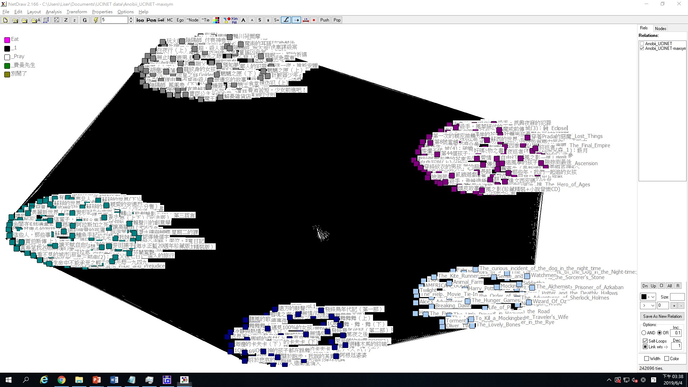
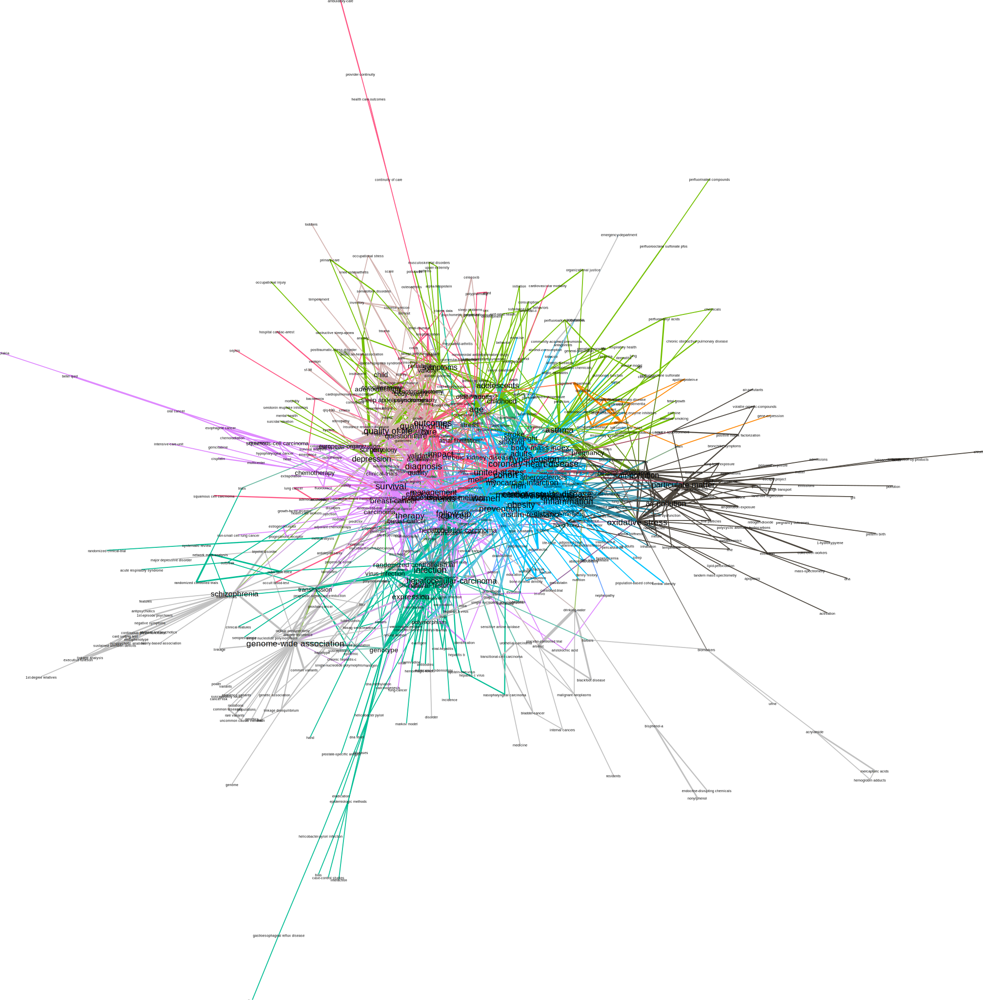

點擊圖片可放大檢視
1. Community-detection with UCINET
將資料使用Maximum的方式對稱後進行以下分析：
1.1 Louvain method with raw-data
Partition with 10 clusters: Q = 0.115
Partition with 17 clusters: Q = 0.109
使用Louvain method可將資料劃分為兩種情形，分別為10與17個子群體，其Q值分別為0.115與0.109。下圖僅呈現Q值高者，即10群之情形。
Figure 1.1 Louvain method的分群結果(10 clusters)
觀察上圖，可發現除去Eat、別鬧了等五個與其他書籍未具有任何相似關係的節點後，其餘書籍皆被劃分至五群之中。其中，右下角之淺藍色子群體大多集結了英文書籍。
1.2 Analysis with dichotomized data
1.2.1 Determine the proper threshold
Figure 1.2 不同similarity thresholds之連結數變化情形
根據上圖，可發現similarity threshold在0.3後變化趨緩。然而，在similarity threshold設為0.3的情況下，17404的連結數對於Louvain method仍是有些吃重的，Girvan-Newman method的結果上亦不盡理想，共分作103個子群體，且其Q值僅有0.332。因此，以下將similarity threshold訂定為0.4進行分析：
1.2.2 Louvain method (dichotomized at 0.4)
Partition with 96 clusters: Q = 0.621
Partition with 115 clusters: Q = 0.576
使用Louvain method可將資料劃分為兩種情形，分別為96與117個子群體，其Q值分別為0.621與0.576。下圖僅呈現Q值高者，即96群之情形。
對照未進行dichotomize的原始資料，可發現其Q值大幅上升，由0.115提升至0.621。
Figure 1.3 Louvain method的分群結果(96 clusters)
觀察上圖，可發現已經能夠識別出部部份子群體之特性，如：右上角的黃色子群體，與右下角的紅色子群體。黃色子群體共包含五個節點，除卻齊邦媛所著之巨流河外，皆為龍應台之作品（巨流河與大江大海一九四九皆書寫大時代下的悲劇，具有高度相似性）；紅色子群體則多為九把刀之著作。
1.2.3 Girvan-Newman method (dichotomized at 0.4)
- Partition with 32 clusters: Q = 0.609
Figure 1.4 Girvan-Newman method的分群結果(32 clusters)
觀察上圖，發現其同樣也能夠識別出部份子群體之特性，如：右上角的深藍色子群體為暮光之城系列作品；左上角紅色的子群體屬同一作品；左邊的藍色子群體為張愛玲之著作；下方粉紅色子群體多為九把刀之作品。
1.2.4 Discussion
雖Louvain method與Girvan-Newman method具有相近的Q值，且皆能夠辨識出部份子群體的特性，但我們認為在dichotomized at 0.4的情境下，Girvan-Newman method的分群表現似乎是較好的。
在Girvan-Newman method中，其外圍地帶之子群體大多是能夠識別出其關聯性的，且未與其他節點相連結之節點聚集至同一子群體。相較Louvain method將大部份之節點分群至核心的五個子群體內，並將未與其他節點相連結之節點視作獨立群體的方法來得更易解讀。
2. Community-detection with Gephi
Use the aNobii bookshelf (cosine similarity) data
Run both Modularity (i.e. Louvain method) and
Girvan-Newman aNobii (dichotomized at 0.7)
Based on results from Q1 and Q2, discuss with clustering method produces the best result.
在Gephi進行Louvain method與Girvan-Newman method的分群分析時，我們先使用了在UCINET中dichotomize至0.7的資料，然而跑出之modularity/ Q值皆過高（幾近於1），分群結果也十分瑣碎，幾乎皆是以系列作品為分群基礎。
多次嘗試後，我們發現dichotomize至0.4的結果最理想，modularity/ Q值皆落0.6左右，在最佳的Q值範圍0.3至0.7中已達上限，分群結果也能呈現各群之類型風格。
2.1 Modularity (Louvain method) with Gephi
圖2.1為使用dichotomized at 0.7之資料，總共分出78群，modularity值為0.967；圖2.2則為dichotomized at 0.4之資料，共分出21群，modularity值為0.608。
比較兩圖可看出圖2.1的分群多以系列作品呈現，例如：左上方的哈利波特系列，左下方的1Q84系列；圖 2.2更能呈現各群的風格，例如：綠色子群體為人性驚悚類，藍色為意識流類。
Figure 2.1 Dichotomized at 0.7之modularity 分群結果(78 clusters)
Figure 2.2 Dichotomized at 0.4之modularity 分群結果(21 clusters)
2.2 Girvan-Newman method with Gephi
圖2.3為使用dichotomize至0.7之資料，將237個節點分為78群，modularity值為0.96733254；圖2.4為使用dichotomize至0.4之資料，將426個節點分為32群，modularity值為0.6088021。相比之下，圖2.3之分群十分瑣碎，連系列作品都未必會分在同一子群體，也難以判斷出各群具備之特質；而圖2.4則如圖2.2使用Louvain method之結果相似，各群風格顯著，例如：桃紅色子群體為人性驚悚類，綠色為溫暖寫實類。
Figure 2.3 Dichotomized at 0.7之Girvan-Newman 分群結果(78 clusters)
Figure 2.4 Dichotomized at 0.4之Girvan-Newman 分群結果(32 clusters)
2.3 Discussion (using data dichotomized at 0.4)
| method | Louvain (UCINET) |
Girvan-Newman (UCINET) |
Louvain (Gephi) |
Girvan-Newman (Gephi) |
|---|---|---|---|---|
| clusters | 96 | 32 | 21 | 32 |
| Q index | 0.621 | 0.609 | 0.608 | 0.6088021 |
在Gephi中，Louvain method與Girvan-Newman method皆產出相近的Q值，不過Girvan-Newman產出的子群體較多。而觀察分群結果後可發現兩者的優劣處十分相像：從零散的小子群體觀察，兩種分群發法都產出內部高度相似的子群體。如在Louvain之中有1Q84系列、九把刀作品集，而在Girvan-Newman中有九把刀作品集、Harry Potter系列。
從較大的子群體評估，兩種分群方法皆產生驚悚推理類、意識流類、或溫情寫實等體型較大之子群體，然而這幾類中都摻雜些許不合乎該風格之書籍。如在Louvain之中的草綠色子群體，多數由驚悚類書籍組成（告白、殺人事件、模仿犯等），然而也包含部分溫情寫實類書籍（父後七日、深夜食堂、台北爸爸，紐約媽媽等）；或是在Girvan-Newman之中的驚悚類書籍也有同樣情況。因此我們認為此兩種分群結果是相似的。
3. Filtering and modularity analysis
3-1
台大公衛論文關鍵字的網路圖共有 983 個節點，對這些節點進行分群，可以分成七群，modularity 值為 0.251。這個網路因為過於龐大，其中雜訊過多，導致分群的 modularity 值過小，顯示出網路內部存在一些節點影響到分群的效果，故為了使分群更有意義，要針對網路的節點進行篩選。
節點篩選的過程如下，首先篩選出 giant component，再篩選出 clustering coefficient 大於 0.15 的節點，這個舉動是因為某些 degree 很高 clustering coefficient 卻很低的節點會影響到分群的結果。最後再篩選出 edge weight 大於 3 的節點。之所以會選擇 3 這個數字是因為界線的設定從 2 到 3 仍然可以大幅提高 modularity，然而若再繼續提高界線則對 modularity 沒有明顯影響。
篩選後的結果，留下 599（60.94 %）個節點，modularity 的值進步到 0.572，並且分出了十個群組。結果如下圖，顏色代表分群，節點大小代表 degree 值的大小。

3-2
漫威英雄英雄網路圖中共有 10496 個節點，對這些節點進行分群，可以分成 24 群，modularity 值為 0.491。在這個網路中同樣因為不重要的節點過多，導致分群的 modularity 值過小，為了使得分群的效果更好，針對網路的節點進行篩選。
節點篩選的過程如下，首先篩選出 giant component，再篩選出 clustering coefficient 大於 0.4 的節點，最後再篩選出 degree 大於 5 的節點，同樣 degree 界線的提高對分群的 modularity 沒有明顯影響。
篩選後的結果，留下 4547（43.43 %）個節點，modularity 的值進步到 0.832，並且分出了 41 個群組，雖說 modularity 值有大幅進步，然而整個網路卻分出更多的群組，代表漫威角色之間存在許多明顯的小團體。結果如下圖，顏色代表分群，節點大小代表 degree 值的大小。

4. Structural Equivalence and Position Analysis
(a), (b) Similarities & Dissimilarities of Trade Data
這裡使用 Network > Roles & Positions > Structural > Profile 以取得 similarity matrix。由於在此選項中並無 Jaccard 方法，因此最後使用 correlation 、matches 與 Euclidean distance 作為 similarity (dissimilarity) matrix 的測量單位。
另外，為了盡量讓結果「透明」，雖然 UCINET 可以同時自動處理 Trade data 中具有多個矩陣的情況，這裡仍只使用 Trade 當中的外交 (diplomats) 資料。
使用 Trade-diplomats 產生的 3 個 similarity (dissimilarity) matrix 進行 hierarchical clustering 的結果如下：
Correlation as similarity measure
Matches as similarity measure
Euclidean Distance as dissimilarity measure
(c) Comparison of Clustering & Multidimensional Scaling
使用「臺大論文口試審查委員」的資料進行 Clustering 與 MDS (皆使用 Euclidean distance) 之後，視覺化的結果如下：
Hierarchical clustering (left) & Multidimensional scaling (right) on NTU thesis committee data
從 MDS 的圖可以看出圖片中央似乎有一團密集的區域 (核心)，這個現象與 clustering 的結果相當吻合 — clustering dendrogram 的形狀是呈現三角形，亦即 dendrogram 的下方在很早期就被分成同一群，並且隨著距離的增加 (similarity 遞減)，這一群變得越來越大。換言之，Clustering 和 MDS 都顯示 NTU thesis committee data 似乎只有一個「核心」。
這個現象在與 Trade-diplomats 相比後會比較明顯 — 下方的 dendrogram 很明顯的與上方呈現三角形的 NTU thesis committee data 差異很大，而這也顯示在下方的 MDS 上：Trade-diplomats 每點之間距離較遠，與呈現一個「核心」的 NTU thesis committee data 有相當差異。
Hierarchical clustering (left) & Multidimensional scaling (right) on Trade-diplomats